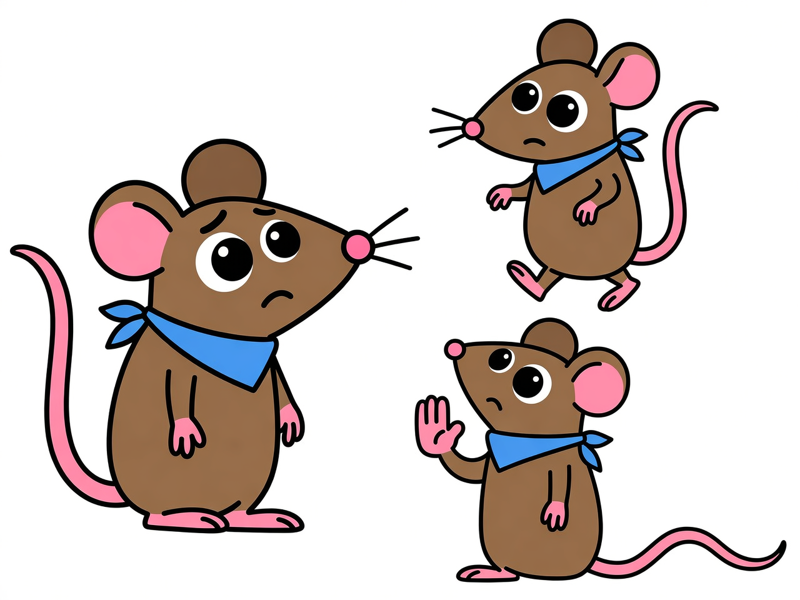

📚 Character & Location References
Use these references for consistent character/location appearance across all pages.

Rita
Light tan fur • Red bow on right ear • Eager/excited expression • "Let's go!"

Rico
Darker brown fur • Blue bandana • Worried/cautious expression • "But wait!"

The Cat
Orange tabby • Green eyes • Playful antagonist • Not scary

The Castle
Gray stone • Purple accents • Wooden door • Friendly not spooky